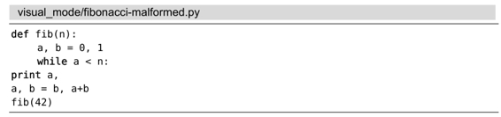
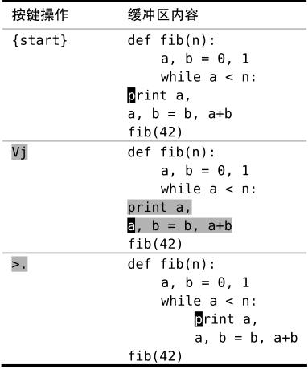

技巧22重复执行面向行的可视命令
当使用.命令重复对高亮选区所做的修改时，此修改会重复作用于相同范围的文本。在本节中，我们会对一个面向行的高亮选区做一个修改，然后使用.命令重复此修改。
在可视模式中执行完一条命令后，我们就会返回到普通模式，并且在可视模式里所选中的文本范围也不再高亮显示了。那么，如果我们想对相同范围的文本执行另外一条可视模式命令，该怎么办？
假设有一段 Python代码的缩进有些问题，如下所示：

这段代码的每级缩进使用4个空格，首先我们得对Vim进行配置，使之符合此缩进风格。
准备工作
要想让<和>命令正常工作，我们需要把‘shiftwidth’及‘softtabstop’的值设为4，并启用‘expandtab’选项。如果你想了解这些配置是如何协同工作的，请查阅Vimcasts.org(1)上的“Tabs and Spaces”主题。下面一行命令会完成上述设置：
➾:set shiftwidth=4 softtabstop=4 expandtab
先缩进一次，然后重复
在这段缩进错误的Python代码中，while关键字下面的两行应该多缩进两级。我们可以高亮选择这两行，然后用>命令对它进行缩进，以修正其缩进错误。但此操作只增加一级缩进就返回普通模式了。
要解决此问题，一个办法是使用gv命令重选相同的文本，然后再次调用缩进命令。然而，如果你已经对Vim解决问题的方式有所领悟的话，你脑海里应该会响起警钟。
当需要执行重复操作时，.命令是最佳的解决方案。与其手动重选相同范围的文本并执行相同的命令，倒不如直接在普通模式里按.键。下面是具体的操作：

如果你善于计算的话，也许更乐意在可视模式中执行2>以便一步到位。不过我更喜欢用.命令，因为它可以给我即时的视觉反馈。如果我需要再次缩进的话，只需再按一次.键即可；或者如果我按的次数太多了，导致缩进过深，按u键就可以撤销多余的缩进。在技巧11中，我们已经用大量篇幅讨论过次数风格与重复风格之间的差异了。
在使用.命令重复一条可视模式命令时，它所操作的文本数量和上次被高亮选中的文本数量相同。对于面向行的高亮选区来说，这种做法往往符合我们的需要。但对于面向字符的高亮选区来说，这却会产生令人意外的结果。接下来我们将通过一个例子来说明这一点。